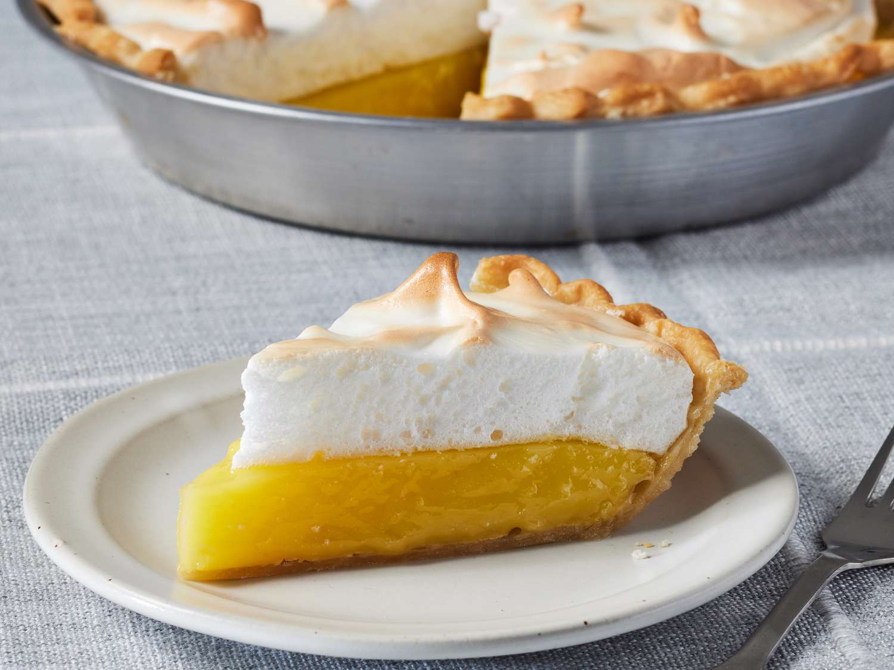

Lasagna

Description
A tart and tangy curd with a sweet and fluffy meringue, all in a crisp pie base? Perfection!
Ingredients
- 1 1/2 cup white sugar
- 2 tablespoons all-purpose flour
- 3 tablespoons cornstarch
- 1/4 teaspoon salt
- 1 1/2 cups water
- 2 medium lemons, juiced and zested
- 2 tablespoons butter
- 4 egg yolks, beaten
- 1 (9 inch) prepared pie crust, baked
- 4 egg whites
Method
- Gather all ingredients and preheat the oven to 325 degrees F (165 degrees C).
- To make the lemon filling: Whisk 1 cup sugar, flour, cornstarch, and salt together in a medium saucepan; stir in water, lemon juice, and lemon zest. Cook over medium-high heat, stirring frequently, until mixture comes to a boil. Stir in butter.
- Place egg yolks in a small bowl and gradually whisk in 1/2 cup of hot sugar mixture.
- To make the meringue topping: Beat egg whites in a glass, metal, or ceramic bowl with an electric mixer until foamy. Gradually add sugar, continuing to beat until stiff peaks form.
- Working quickly, spread meringue over pie filling, sealing the edges at the crust. Use the back of the spoon to create peaks on the top of the meringue if you like.
- Bake pie in the preheated oven until meringue is golden brown, about 20 to 25 minutes.
Home